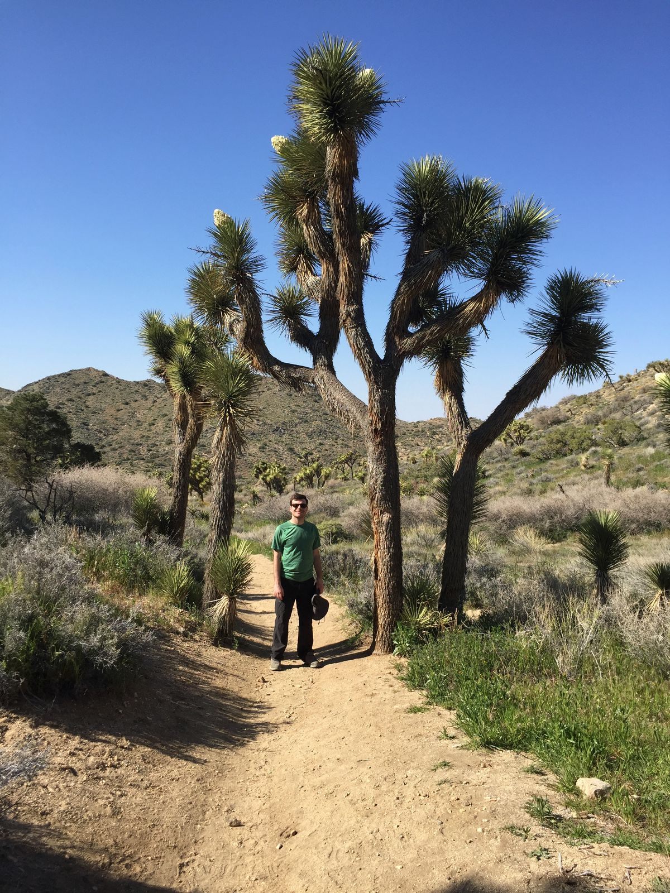
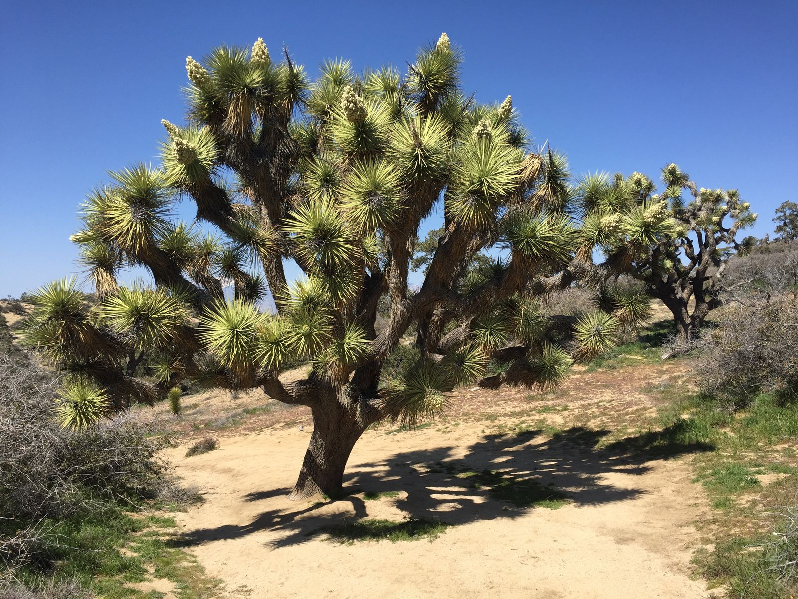
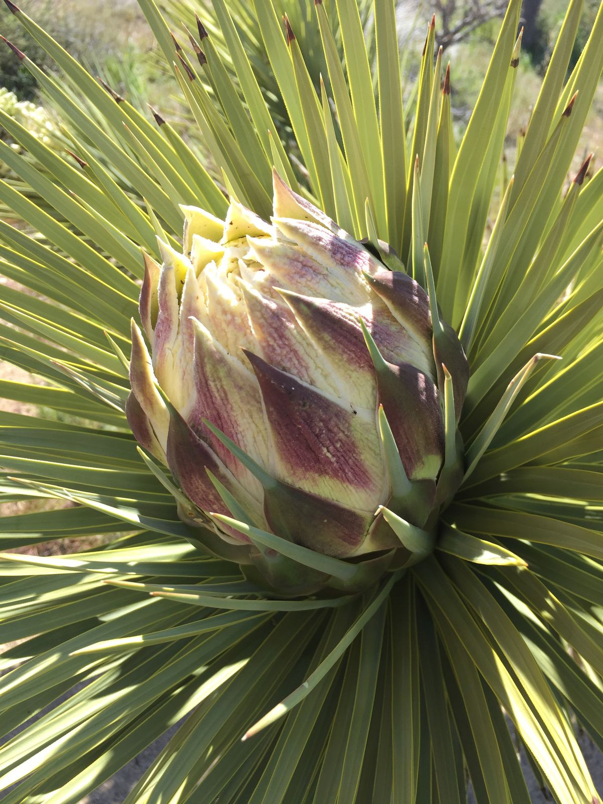
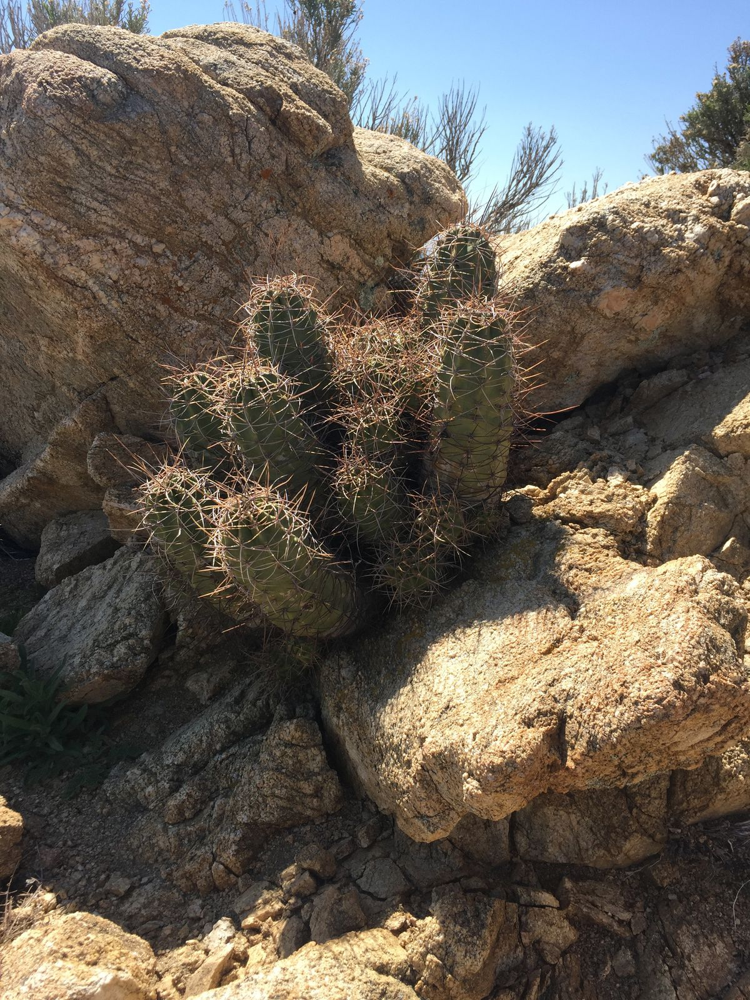
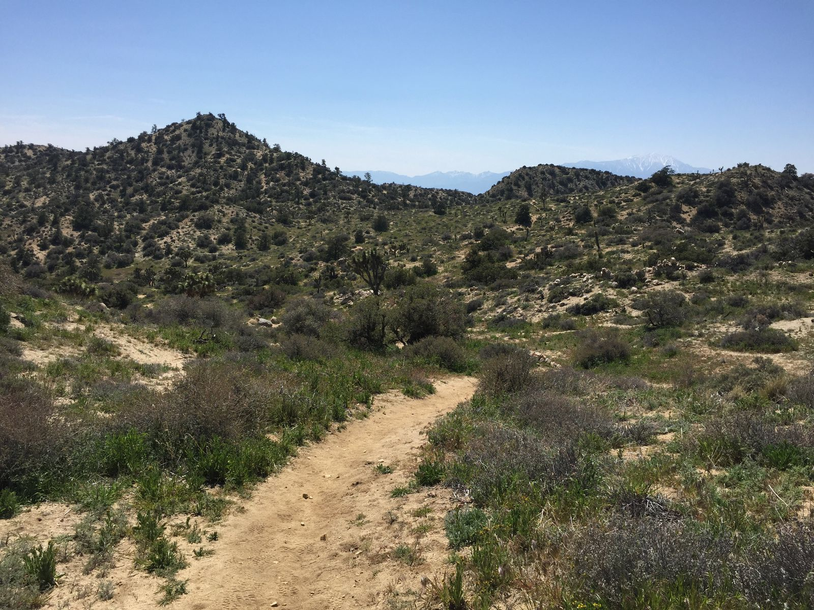
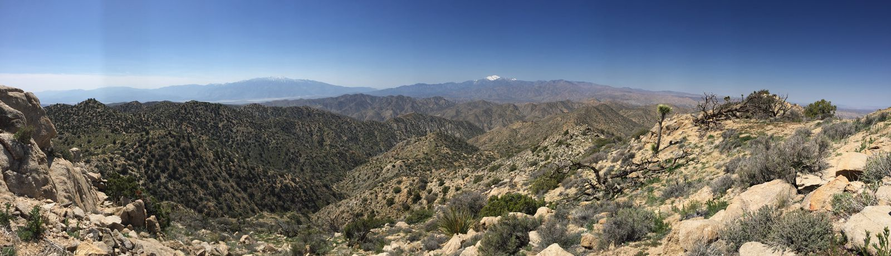

Black Rock Canyon
The first day in Joshua Tree we didn't even go into the National Park proper. We started just outside in the north east tip, exploring what is known as Black Rock Canyon.
It turned out that this region had more beautiful landscapes than Joshua Tree proper, so I'm glad we didn't skip it. The area has seen more rainfall than any year since 1942, and as a result the park was more colorful and blooming than it has been in recent memory. Almost every Joshua tree had at least one white or purple flower.

We did two hikes that first day: Panorama Loop ("strenuous", 6.6 miles) to Warren Peak ("strenuous", ~1 mile). One of the rangers in the visitor center said all the trails would be packed, but I don't know what she was talking about. It was pretty empty and we ran into few people on the trail.





